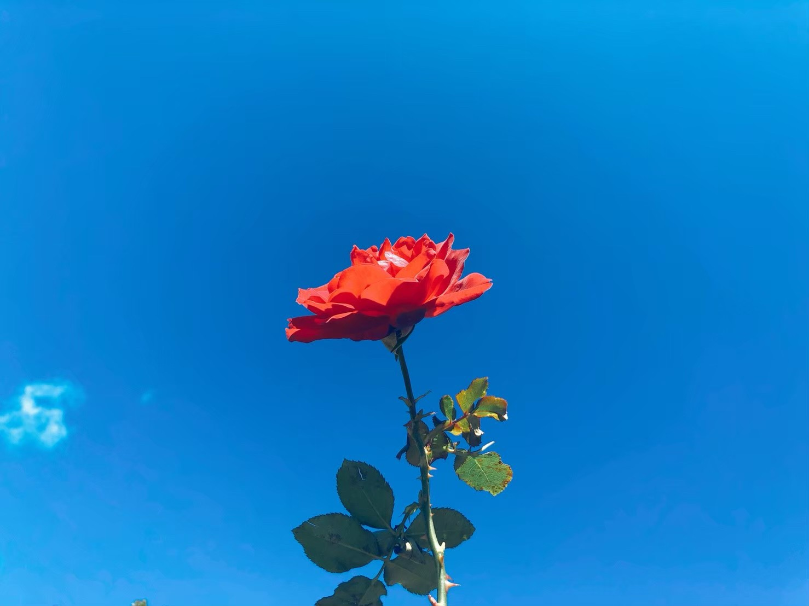
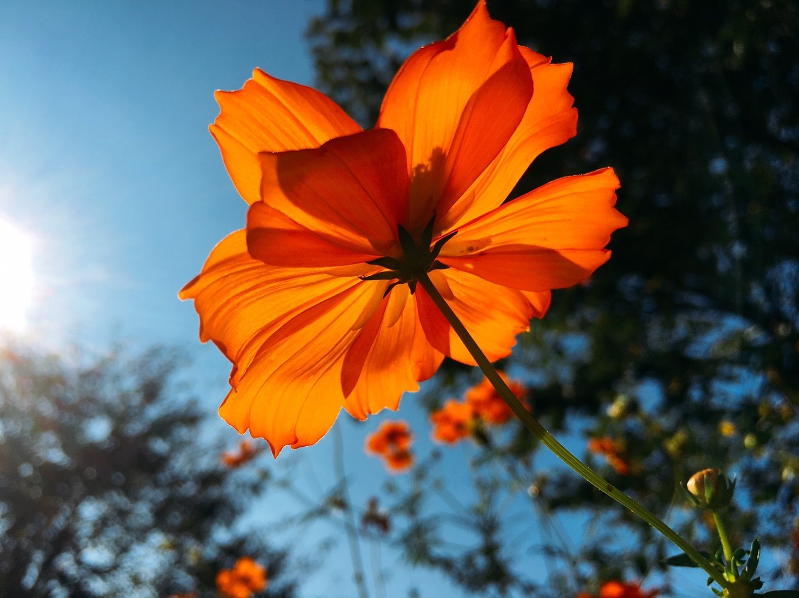

自然光マスター

皆さんこんにちは。Nanaです。
今回は、太陽の光を利用した撮り方を紹介します。
では、さっそくですがこちらの薔薇の写真をご覧ください。
この薔薇の撮影時、太陽は私の後ろ側にありました。
今度は場所を変えて、太陽が自分の前にくるように移動してみましょう。

移動して撮影した薔薇の写真がこちらです。
さっきの薔薇の隣に咲いてた薔薇です。
太陽の光が当たる場所が違うだけで、写真の印象はかなりかわります。
今度は別の花を見てみましょう。
こちらも、場所を変えてみましょう。

今度は花の下から撮ってみました。
先ほどの花と同じ花でアングルを変えてみました。
同じの花なのに、全然印象が違いますよね。
天気が良い日は、色んなアングルから撮影してみてください。
写真に立体感が生まれて素敵な写真が撮れるはずです。